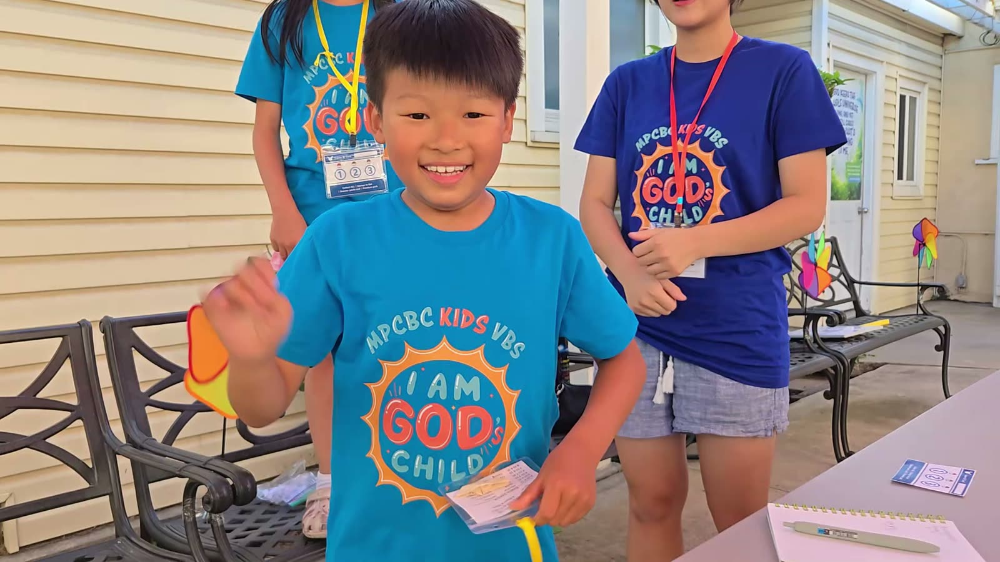

One church family, worshipping in Cantonese, English and Mandarin.
一個教會大家庭，以粵語、英語及國語一同敬拜。
Plan your visitAbout our church
Monterey Park Chinese Baptist Church 慕道園華人浸信會

A home for three languages
三種語言，同屬一家。
1988
1991
Mandarin worship began, then English.

教會成立於 1977年。教會剛開始是使用粵語崇拜。但從八十年代起，教會看到講國語的新移民人數在洛杉磯迅速增長，考慮到新移民對基督福音的需要。於是，教會決定開展國語事工，為新移民群體預備一個屬靈的家，於1988年開始了國語崇拜。之後，在1991年教會又增設了英語的崇拜，直到如今，教會一直保持有三種語言的崇拜。
Our church was founded in 1977 with worship in Cantonese. During the 1980s, as the number of Mandarin-speaking immigrants in Los Angeles grew rapidly, the church saw the need to share the gospel and provide a spiritual home for new arrivals. Mandarin worship began in 1988. English worship was added in 1991, and the church continues to worship in all three languages.
Pastors & leaders
教牧團隊
- From
- Hong Kong
- Studied
- Fuller Theological Seminary; Claremont Graduate University
- Contact
- info@mpcbc.net
 Rev. Caleb Cheung, Ph.D. (張健庭牧師) is from Hong Kong. After being called to ministry, he studied theology at Fuller Theological Seminary and pursued doctoral studies in theology and philosophy of religion at Claremont Graduate University. He has continued serving and shepherding this church and is its senior pastor.
Rev. Caleb Cheung, Ph.D. (張健庭牧師) is from Hong Kong. After being called to ministry, he studied theology at Fuller Theological Seminary and pursued doctoral studies in theology and philosophy of religion at Claremont Graduate University. He has continued serving and shepherding this church and is its senior pastor.
Rev. Edward Lu (呂德勝牧師) is lead pastor of Connect Ministry, the church’s English-language ministry. The Mandarin congregation is led by [Pastor name] ([牧師姓名]).
張健庭牧師來自香港，多年前蒙召在福樂神學院念神學，繼在克箂蒙研究大學進修博士課程專修神學及宗教哲學，後留在本教會事奉與牧養，現任本教會主任牧師。
Our mission
使命宣言
Knowing God is our foundation.
Glorifying God is our goal.
認識神為基礎，榮耀神是目標。
We seek to know God and make His name known through worship  , fellowship
, fellowship  , discipleship, ministry
, discipleship, ministry  and evangelism.
and evangelism.
我們藉著敬拜、團契、門徒訓練、事奉、傳福音來認識和榮耀神。
Read our beliefsEight foundations. One shared faith.
Beliefs
信仰告白
God 神
God is the Creator and Ruler of the universe. He exists eternally as three persons: the Father, the Son and the Holy Spirit. These three are equal and are one God.
神是宇宙的創造者與主宰，祂以三位一体永遠存在:聖父、聖子、聖靈。三位同等為一神。
Scripture references: Genesis 1:1,26,27, 3:22, Psalms 90:2; Matthew 28:19; 1 Peter 1:2; 2 Corinthians 13:14
Jesus Christ 耶穌基督
Jesus Christ is the Son of God and is equal with the Father. Jesus lived a sinless life on earth and offered Himself as the perfect sacrifice, dying on the cross for all humanity. He rose from the dead after three days, demonstrating His power over sin and death. He ascended to heavenly glory and will return to earth as King of kings and Lord of lords.
耶穌基督是神的兒子，與父同等。耶穌曾在地上無罪活過人生，並將自己獻上成為最完美的祭，為所有的人類死在十字架上。三天後從死裡復活，彰顯祂勝過罪與死的權能。祂升到天上的榮耀，有一天要回到地上來作萬王之王、萬主之主。
Scripture references: Matthew 1:22-23; Isaiah 9:6; John 1:1-5, 14:10-30; Hebrews 4:14,15; 1 Corinthians 15:3-4; Romans 1:3-4; Acts 1:9-11; 1 Timothy 6:14; Titus 2:13
The Holy Spirit 聖靈
The Holy Spirit is equal with the Father and the Son. He is present in the world to help people know Christ, and He lives in every Christian from the moment of salvation. He gives believers power for daily living, understanding of spiritual truth and guidance for the way ahead. He gives spiritual gifts to every believer. As Christians, we seek daily to live under the Holy Spirit’s direction.
聖靈與聖父聖子同等。祂臨在世上為要幫助人認識基督。並且在人得救那一刻，祂便住在每一個基督徒裡面。祂供應每個基督徒每天生活的能力，對於屬靈真理的理解力，以及前行的引導。祂賞賜屬靈恩賜給每個得救的信徒。作為基督徒，我們每天尋求過一個聖靈管理的生活。
Scripture references: 2 Corinthians 3:17; John 16:7-13, 14:16-17; Acts 1:8; 1 Corinthians 2:12; 3:16 Ephesians 1:13,5:18; Galatians 5:25
The Bible 聖經
The Bible is God’s Word to us, written by people under the supernatural guidance of the Holy Spirit. It is the highest authority for Christian faith and life.
聖經是神給我們的話，是藉著聖靈超然的引導，由人寫成。是基督徒信仰與生活的最高準則。
Scripture references: 2 Timothy 3:16,1:13; 2 Peter 1:20-21; Psalms 119:105, 160, 12:6; Proverbs 30:5
Humanity 人類
Human beings were created in God’s spiritual image, reflecting His character. Humanity is the pinnacle of God’s creation. Although every person has the potential for good, our sinful attitudes separate us from God and bring many problems into our lives.
人類是照神屬靈的形象所造，本有神的屬性。人是神創造的極致。雖然人本有善的潛能，我們每個人卻都因著罪的態度與神隔絕，而使得生命陷入種種問題。
Scripture references: Genesis 1:27; Psalms 8:3-6; Isaiah 53:6a; Romans 3:23; Isaiah 59:1-2
Salvation 救恩
Salvation is God’s free gift, which we must receive. We can never atone for our sins through good works or self-improvement. Only through Jesus Christ and God’s forgiveness can we be delivered from the penalty of sin. We are saved when we turn in faith to Jesus from a self-centred life lived in our own strength. Eternal life begins when we receive the life of Jesus Christ by faith.
救恩是神給我們白白的禮物，但需要我們去接受。我們永遠無法靠著善行與自我改善來贖我們的罪。惟有靠著耶穌基督，蒙神赦免，才能從罪的刑罰得贖。當我們從以自我為中心、靠自己的生命，憑信心轉向耶穌時，我們便得救。永遠的生命開始於我們憑信心接受耶穌基督的生命那一刻。
Scripture references: Romans 6:23,5:1; Ephesians 2:8-9; John 14:6;1:12; Titus 3:5; Galatians 3:26
Eternal Security 永遠的保障
Because God gives us eternal life through Jesus Christ, true believers have eternal assurance of salvation. Salvation comes through God’s power and grace, not through a Christian’s own efforts. His preserving power and grace give us this lasting assurance. Believers also have a responsibility to continue trusting God and living in His care.
由於神通過耶穌基督賜給我們永遠的生命，真信徒有永遠的得救保障。救贖是藉著神的權能與恩典，不是憑基督徒自己的努力。神保守的權能與恩典使我們有這永遠的保障。但信徒也有責任不斷信靠神，活在神的保守之中。
Scripture references: John 10:29; 2 Timothy 1:12; Hebrews 7:25, 10:10,14; 1 Peter 1:3-5; Hebrews 6:4-8; Hebrews 10:26-27; John 15:6
Eternity 永恆
People were created to exist forever. We will either be eternally separated from God because of sin, or live eternally with Him through forgiveness and salvation. Eternal separation from God is hell; eternal life is being with God forever.
人被創造要存到永遠。我們或要因著罪與神永遠隔離，或是因著赦免與救恩與神永遠同在。與神永遠隔離便是地獄，與神永遠同在便是永遠的生命。
Scripture references: John 3:16, 2:25, 5:11-13; Romans 6:23; Revelation 20:15; Matthew 1:8; Matthew 2:44,46


New here? Get connected.
初次來訪 · 與我們聯絡
We know visiting a church for the first time can feel intimidating. Tell us you’re coming and someone will look out for you.
Sundays: Mandarin 9:00 · Children 10:00 · Cantonese and English 11:00 AM.
Youth Sunday School, Sundays 10:00–10:45 AM · College / Career Fellowship, Mondays 6:30–9:00 PM, West Covina.
Call, write or come by on a Sunday: we are at 302 W. Commonwealth Ave., Alhambra.

Contact & directions 交通指南
info@mpcbc.netGet directionsAlhambra, CA 91801 · (626) 289-1284 · Office hours: [Days, times]